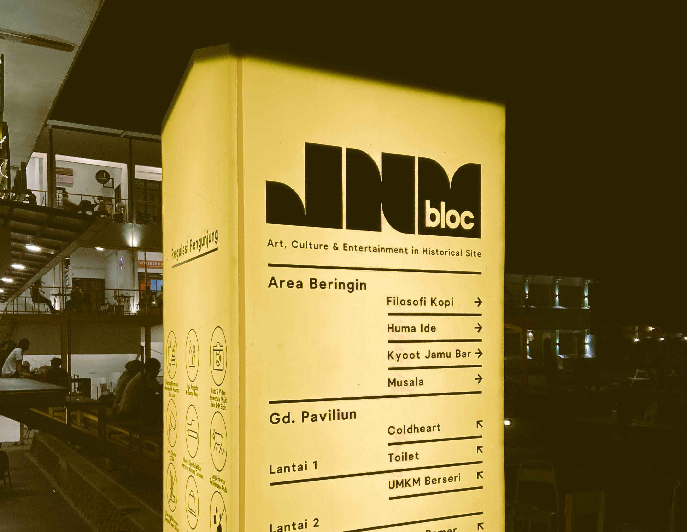

Hai Fira :)
bagaimana Harimu? semoga baik Sudah berapa hari ya? atau bahkan bulan?, aku tidak tahu, apakah Erik akan cepat mengantarkan tas ini atau bahkan dia lupa? seperti karpet yang kutitipkan padanya waktu itu, padahal aku terus meminta kabar darinya saat itu untuk segera ke Makassar menemuimu. Kali ini tidak akan aku paksa Erik ataupun sekedar menanyakan titipan ini, biarlah Erik yang menentukan.
Tentang tas ini, tidak ada maksud apa-apa selain memberikan kejutan-kejutan kecil untukmu. Sore itu, sepulang kerja, aku dan mas Apip melanjutkan perjalanan menuju JNM Bloc setelah ponselku bergetar oleh pesan masuk dari Erik yang berisi "JNM anak2", pesan ini langsung aku kirimkan padamu juga, sekedar menginformasikan bahwa aku tidak menunggu kabarmu dari rumah tapi dari JNM. di sana kami duduk di depan cafe COLDHEART, cafe tempatmu memesan mocktail yang menggelikan itu, sembari kami mengobrol santai mataku tertuju ke arah toko percis di seberang COLDHEART lalu aku beranjak dari tempat duduk pura-pura berjalan santai ke arah toko di seberang COLDHEART, tapi dalam pikiran aku panik "apakah tas itu sudah laku belum ya?". Sampai di depan toko, mataku tajam menyisir barang pada etalase toko itu, soalnya, terakhir kali ke sini aku melihat tas itu masih dipajang di depan pintu, aku menghampiri penjaga toko dan berkata, "permisi kak, tas transparan yang biasanya dipajang di depan apakah masih ada?" kakak yang baik menjawab "masih kak, sisa satu ini" aku menghela nafas dan tersenyum.